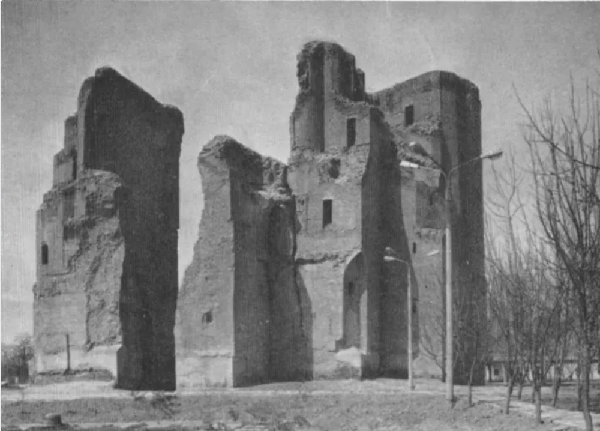
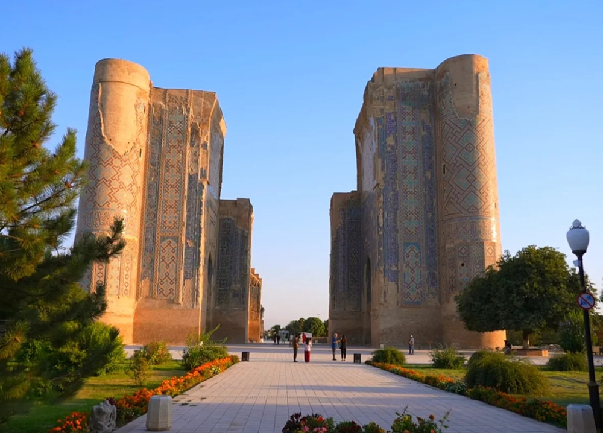

Structural Consolidation
Notice the western pylon's inner fracture: in 1975, the raw core brickwork was severely eroded. Modern intervention filled the vertical void with horizontal baked-brick courses to halt structural collapse.
Urban Setting & Landscape
In 1975, Ak-Saray was embedded within an unpaved rural buffer with organic mature trees and Soviet-era street poles. By 2025, surrounding vernacular buildings were cleared for a vast polished granite pedestrian plaza.
UNESCO 'In Danger' Dilemma
This 50-year visual evidence captures why UNESCO inscribed Shakhrisabz on the List of World Heritage in Danger (2016): balancing structural survival and tourism development against the preservation of authentic historical integrity.
Shakhrisabz
Silk Road Docent
AI Knowledge Assistant
Trained on primary Timurid chronicles, archaeological field reports from Karshi State University, and UNESCO World Heritage conservation dossiers.